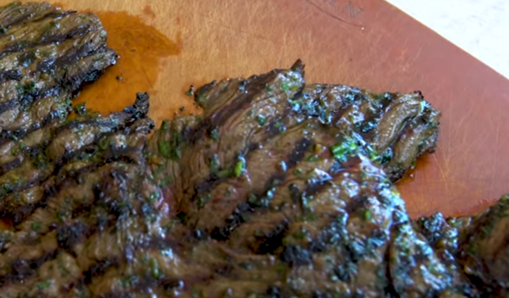

Carne Asada

The Perfect Carne Asada for Tacos and Burritos
This Carne Asada will literally blow your jorts off. I make it any time I can.
WHAT YOU NEED, YO!
- 1 bunch of cilantro (no stems) finely chopped
- 3 large cloves of garlic, minced
- 1 tablespoon of cumin
- 2 teaspoons brown sugar
- 1 teaspoon each of Kosher Salt and fresh ground black pepper
- 1/2 cup neutral oil (I like to used Avocado Oil. High smoke point)
- Zest and juice of one lime
- 2 tablespoons soy sauce
- 2 pounds skirt, flap or flank steak (skirt is the best and cooks faster)
WHAT YOU DO, YO!
- Combine all ingredients except the steak to make the marinade - mix well
- Put steak and marinade into a large zip-lock bag, zip shut and squish around to make sure steak is well covered.
- Refrigerate for 1-4 hours
- Heat grill to high and grill steak approximately 5 minutes a side or as necessary until approximately 130 defrees F
- Remove from grill, cover with foil and let rest for about 10 minutes before cutting across the grain (very important) and then serve.